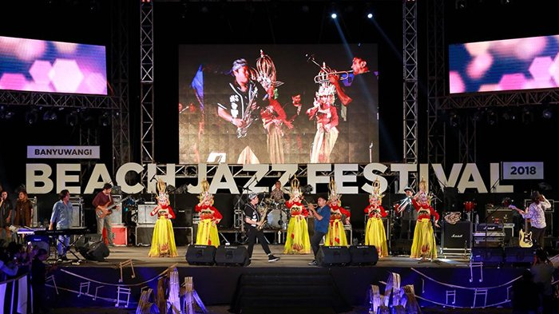

Banyuwangi Jazz Festival atau disingkat menjadi BJF adalah event musik jazz yang diselenggarakan oleh Kabupaten Banyuwangi. Acara ini adalah bagian dari Banyuwangi Festival untuk meperingati hari jadi Kabupaten Banyuwangi yang jatuh pada tanggal 18 Desember. Acara ini pertama kali diadakan pada tahun 2012 di Gesibu Blambangan.